4.2 Complexidade de Algoritmos em Álgebra Linear
Dados dois algoritmos diferentes para resolver o mesmo problema, como podemos
escolher qual desses algoritmos é o melhor? Se pensarmos em termos de eficiência (ou
custo computacional), queremos saber qual desses algoritmos consome menos recursos
para realizar a mesma tarefa.
Em geral podemos responder essa pergunta de duas formas: em termos de tempo ou
de espaço.
Quando tratamos de eficiência espacial, queremos saber quanta memória (em
geral RAM) é utilizada pelo algoritmo para armazenar os dados, sejam matrizes, vetores
ou escalares.
Quando tratamos de eficiência temporal, queremos saber quanto tempo um
algoritmo leva para realizar determinada tarefa. Vamos nos concentrar nessa segunda
opção, que em geral é a mais difícil de ser respondida.
Obviamente o tempo vai depender do tipo de computador utilizado. É razoável
de se pensar que o tempo vai ser proporcional ao número de operações de
ponto flutuante (flops) feito pelo algoritmo (observe que o tempo total não
depende apenas disso, mas também de outros fatores como memória, taxas de
transferências de dados da memória para o cpu, redes,...). Entretanto vamos nos
concentrar na contagem do número de operações (flops) para realizar determinada
tarefa.
No passado (antes dos anos 80), os computadores demoravam mais tempo para
realizar operações como multiplicação e divisão, se comparados a adição ou subtração.
Assim, em livros clássicos eram contados apenas o custo das operações × e ∕. Nos
computadores atuais as quatro operações básicas levam o mesmo tempo. Entretanto, na
maioria dos algoritmos de álgebra linear o custo associado as multiplicações e divisões é
proporcional ao custo das somas e subtrações (pois a maioria dessas operações podem
ser escritas como a combinação de produtos internos). Dessa forma, na maior parte
deste material levaremos em conta somente multiplicações e divisões, a não ser que
mencionado o contrário.
Tenha em mente que a ideia é estimar o custo a medida que o tamanho dos vetores e
matrizes cresce muito (para n grande).
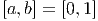
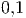
Exemplo 4.2.1 (Produto escalar-vetor). Qual o custo para multiplicar um
escalar por um vetor?
Solução. Seja a ∈R e  ∈Rn, temos que
∈Rn, temos que
usando n multiplicações, ou seja, um custo computacional, C, de
♢
 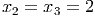
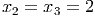
Exemplo 4.2.2 (Produto vetor-vetor). Qual o custo para calcular o produto
interno 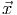 ⋅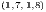?
Solução. Sejam 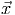,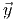 ∈Rn, temos que
São realizadas n multiplicações (cada produto xi por yi) e n - 1 somas, ou seja, o
custo total de operações é de
♢
Exemplo 4.2.3 (Produto matriz-vetor). Qual o custo para calcular o produto de
matriz por vetor A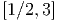?
Solução. Sejam A ∈Rn×n e 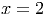 ∈Rn, temos que
 | (4.5) |
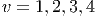
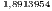
Para obter o primeiro elemento do vetor do lado direito devemos multiplicar a
primeira linha de A pelo vetor coluna 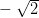. Note que esse é exatamente o custo do produto
vetor-vetor do exemplo anterior. Como o custo para cada elemento do vetor do lado direito
é o mesmo e temos n elementos, teremos que o custo para multiplicar matriz-vetor
é
A medida que n →∞, temos
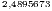
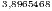
 | (4.8) |
♢
Exemplo 4.2.4 (Produto matriz-matriz). Qual o custo para calcular o produto
de duas matrizes AB?
Solução. Sejam A,B ∈Rn×n temos que
 | (4.9) |
onde o elemento dij é o produto da linha i de A pela coluna j de B,
 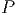
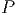
Note que esse produto tem o custo do produto vetor-vetor, ou seja, 2n - 1. Como
temos n × n elementos em D, o custo total para multiplicar duas matrizes
é
 | (4.12) |
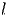
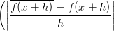
♢
 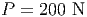
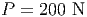